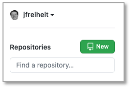

Werkzeuge¶
Integrated Development Environment (IDE)¶
Für die Webentwicklung stehen Ihnen viele gute Entwicklungswerkzeuge zur Verfügung. Für welches Sie sich entscheiden, bleibt Ihnen überlassen. Hier eine Auswahl der aus meiner Sicht besten Entwicklungswerkzeuge:
Für die Tools von Jetbrains benötigen Sie einen Account. Mit Ihrer HTW-E-Mail-Adresse bekommen Sie aber eine kostenlose Hochschullizenz und können so die Enterprise-Versionen kostenlos nutzen. Sublime Text ist Shareware und fragt regelmäßig, ob Sie spenden möchten.
Git¶
Git ist ein Werkzeug zur Versionskontrolle und zum gemeinsamen Entwickeln in Teams. Nach jeder Übung committen Sie Ihre Lösung und pushen Sie auf einen zentralen, netzbasierten Dienst, wie z.B.
Gewähren Sie mir Zugriff auf Ihr zentrales Repository. Auf GitHub finden Sie mich unter jfreiheit bzw. meiner E-Mail-Adresse joern.freiheit@htw-berlin.de.
Repository initial anlegen¶
Wir zeigen das Erstellen eines Repositories exemplarisch für GitHub.
Option A: Repository zunächst in Github anlegen, dann clonen¶
Als erstes loggen Sie sich in Github ein. Dort gibt es in der linken oberen Ecke einen Button New, siehe Bild:

Klicken Sie darauf und geben Sie die notwendigen Informationen ein (Beschreibung ist optional):

Sie können wählen, ob das Repository Public (für alle lesbar) oder Private (nur für Eingeladene lesbar) sein soll. Klicken Sie auf den Button Create repository. Kopieren Sie sich nun den Remote-Pfad in Ihre Zwischenablage, hier https://github.com/jfreiheit/Webtech20.git.
Wechseln Sie nun lokal in Ihr Terminal und wechseln in Ihren Workspace Ihrer IDE. Ich wähle hier den Pfad /Users/jornfreiheit/Sites, da dieser Pfad gleichzeitig mein DocumentRootist, d.h., wenn ich localhost im Browser aufrufe, dann wird in diesem Pfad nach den Webseiten "gesucht".
jornfreiheit@Jorns-MacBook-Pro Sites % pwd
/Users/jornfreiheit/Sites
Geben Sie dort nun ein:
jornfreiheit@Jorns-MacBook-Pro Sites % git clone https://github.com/jfreiheit/Webtech20.git
Cloning into 'Webtech20'...
warning: You appear to have cloned an empty repository.
also git clone gefolgt von dem Remote-Pfad aus Ihrer Zwischenablage. Wenn Sie in Github weder README.md noch .gitignore ausgewählt hatten, dann erhalten Sie eine Warnung, dass Sie ein leeres Repository clonen. Das ist aber kein Problem. Sie können aber auch beide Datein in Ihr Repository integrieren, die .gitignoreverwenden wir auf jeden Fall. In dem Ordner, in den Sie geclont haben, wird nun ein Ordner Webtech20 angelegt. Diesen Ordner können Sie nun als Workspace Ihrer IDE verwenden. Also z.B. mit IntelliJ IDEA:

öffnen Sie das Projekt (Open or import) Webtech20. Es erscheint:

Hier können Sie wählen, dass neue Dateien immer automatisch zum Git-Repoitory hinzugefügt werden - das können Sie aber auch immer manuell machen (git add .). Angenommen, wir erstellen uns jetzt eine Datei index.html (File --> New --> HTML File) mit:
<!DOCTYPE html>
<html lang="en">
<head>
<meta charset="UTF-8">
<title>Erster Test</title>
</head>
<body>
<h1>Willkommen</h1>
<p>Das ist die Datei index.html. Sie liegt bei mir
unter /Users/jornfreiheit/Sites/Webtech20.
Der Ordner /Users/jornfreiheit/Sites ist mein
DocumentRoot, deshalb kann ich diese Datei im Browser
unter localhost/Webtech20/index.html aufrufen.
Der Ordner Webtech20 wird von Git verwaltet. </p>
</body>
</html>
Da der Ordner Sites bei mir DocumentRoot ist und sich der Webtech20-Ordner (in dem die neue index.html ist) direkt darunter befindet, kann ich mir die Datei im Browser unter localhost/Webtech20/index.html anzeigen lassen. Das nat nichts mit Git zu tun, sondern mit dem DocumentRoot des lokalen Webservers.
Wir fügen im Terminal im Webtech20-Ordner diese Datei dem Git-Repoitory hinzu (falls noch nicht automatisch durch unsere IDE passiert):
jornfreiheit@Jorns-MacBook-Pro Webtech20 % git add index.html
jornfreiheit@Jorns-MacBook-Pro Webtech20 % git status
On branch master
No commits yet
Changes to be committed:
(use "git rm --cached <file>..." to unstage)
new file: .idea/.gitignore
new file: .idea/Webtech20.iml
new file: .idea/misc.xml
new file: .idea/modules.xml
new file: .idea/vcs.xml
new file: index.html
jornfreiheit@Jorns-MacBook-Pro Webtech20 %
Außerdem sollten wir den .idea-Ordner von der Git-Verwaltung ausschließen. Dazu erstellen wir im Webtech20-Ordner eine Datei .gitignore, falls diese noch nicht existiert und tragen dort .idea ein. Fügen Sie die Datei .gitignore Ihrem repository hinzu, führen Sie Ihr erstes Commit aus und pushen Ihr Repository nach Github:
git add .ignore
git commit -m "erstes commit"
git push
In Github erkenn Sie, dass commit und push geklappt haben:

In Zukunft fügen Sie Ihre neu erstellten Dateien und Ordner immer mit git add . hinzu, erstellen neue Commits mit git commit -m "Commit-Nachricht" und pushen dann nach Github mit git push.
Option B: Repository in Github anlegen und lokal anlegen, dann verbinden¶
- Legen Sie sich wie oben beschrieben ein Repository unter GitHub an. Kopieren Sie die Remote-URL (z.B.
https://github.com/jfreiheit/Webtech20.git). - Erstellen Sie sich lokal einen Ordner (am besten in Ihrem DocumentRoot), z.B.
Webtech20(mkdir Webtech20). Wechseln Sie in diesen Ordner (cd Webtech20) und führen Sie dortgit initaus. Es entsteht ein.git-Ordner. - Fügen Sie diesem lokalen Repository alle Ihre bisher in
Webtech20erstellten Dateien mitgit add .hinzu. - Erstellen Sie ein Commit, z.B.
git commit -m "initial commit". - Verbinden Sie Ihr lokales Repository mit dem remote-Repository auf Github durch
git remote add origin https://github.com/jfreiheit/Webtech20.git(fürhttps://...setzen Sie Ihre Remote-URL ein). - Pushen Sie die Dateien auf Ihr remote-Repository:
git push --set-upstream origin master.
In Zukunft fügen Sie Ihre neu erstellten Dateien und Ordner immer mit git add . hinzu, erstellen neue Commits mit git commit -m "Commit-Nachricht" und pushen dann nach Github mit git push.
Webserver¶
Für das Modul benötigen wir einen Webserver. Wir verwenden den Apache Webserver. Auf dem Mac ist er bereits vorhanden, auf Linux-Systemen meistens auch. Für Windows-Systeme wird die Installation von XAMPP empfohlen. Hier finden Sie Anleitungen zur Einrichtung des Webservers:
- Windows:
- https://www.ionos.de/digitalguide/server/tools/xampp-tutorial-so-erstellen-sie-ihren-lokalen-testserver/
- https://werner-zenk.de/tipps/lokale_webserver_xampp.php
- Wichtig ist, dass Sie wissen, wo sich Ihr DocumentRoot befindet (zunächst
xampp\htdocs- lässt sich aber ändern)
- Mac:
- der Apache-Webserver ist bereits installiert
- achten Sie darauf, dass Sie Ihr DocumentRoot kennen (meistens
Sites, eventuell ändern)
- Linux:
- die meisten Linux-Systeme haben bereits einen Webserver (auch hier wichtig, DocumentRoot zu kennen)
- wenn nicht, können Sie sich auch XAMPP installieren
Um zu testen, ob Ihr Webser läuft, erstellen Sie im DocumentRoot eine Datei index.php mit folgendem Inhalt:
<?php phpinfo(); ?>
und rufen in Ihrem Browser http://localhost/index.php auf. Es sollte eine ähnliche Ausgabe wie folgt erscheinen (nur Ausschnitt:

Developer Tools¶
Alle Browser sind mit Werkzeugen ausgestattet, die es Web-Entwicklerinnen ermöglichen, im Browser Informationen über die Webanwendung zu erhalten. Für einige Browser ist hier angegeben, wie Sie diese Entwicklerwerkzeuge einschalten.
Chrome¶
In Chrome sind die Entwicklerwerkzeuge unter dem Menü neben der URL-Eingabezeile unter Weitere Tools --> Entwicklertools verfügbar (siehe folgendes Bild).

Die eingeschalteten Entwicklertools offenbaren Ihnen umfassende Informationen über die angezeigte Webseite. Besonders interessant ist der Reiter Console:

oder auch der Reiter Elements, der Ihnen sowohl den HTML- als auch den jeweiligen CSS-Code anzeigt:

Weiterführende Informationen erhalten Sie unter https://developers.google.com/web/tools/chrome-devtools.
Firefox¶
Zu den Entwicklertools von Firefox finden Sie Informationen auf
Die Entwicklertools lassen sich in Firefox öffnen unter Web-Entwickler --> Inspektor:
Sie haben die gleichen Möglichkeiten der Ananlyse wie bei Chrome, bei Safari und anderen Browsern:

Safari¶
In Safari müssen Sie zunächst den Menüeintrag Entwickler aktivieren. Eine Anleitung dazu finden Sie z.B. hier auf heise . Weitere Informationen zu den Entwicklertools erhalten Sie z.B. auf

Curl¶
Curl ist ein Open-Source-Kommandozeilenprogramm, um Daten mittels URL zu transferieren. Curl kann auf der Kommandozeile genutzt werden, um SMTP, HTTP, FTP usw. zu verwenden. Wir werden Curl insbesondere für die HTTP-Anfragemethoden GET und POST verwenden.
Eine ausführliche Beschreibung von Curl ist im Buch Everything curl - the book frei verfügbar. Die Installation von Curl erfolgt über die Curl Download Seite.
Zum Testen, ob Curl korrekt funktioniert, können Sie im Terminal z.B.
curl freiheit.f4.htw-berlin.de/curl.html
eingeben. Es sollte folgende Ausgabe erscheinen:
<!DOCTYPE html>
<html>
<head>
<title>Curl-Test</title>
</head>
<body>
<p>Hallo FIW!</p>
</body>
</html>
Mit dem -o-Flag können Sie die Datei speichern (Sie können einen Dateinamen angeben - hier curl.html):
curl -o curl.html freiheit.f4.htw-berlin.de/curl.html
Da oben die lokale Datei genau so heißt wie die remote-Datei, hätte man auch
curl -O freiheit.f4.htw-berlin.de/curl.html
angeben können, also großes -O. Mit dem -d-Flag können Parameter übergeben und die entsprechende Seite mit einer POST-Anfrage aufgerufen werden. Mit dem zusätzlichen -G-Flag erfolgt die Anfrage nicht als POST sondern als GET. Mit dem -I-Flag fragen Sie den Header der Anfrage ab, z.B.:
curl -I freiheit.f4.htw-berlin.de/curl.html
gibt etwas aus in der Art:
HTTP/1.1 200 OK
Date: Thu, 04 Jun 2020 13:59:43 GMT
Server: Apache/2.4.38 (Debian)
Last-Modified: Thu, 04 Jun 2020 13:01:59 GMT
ETag: "78-5a741c004bdb9"
Accept-Ranges: bytes
Content-Length: 120
Vary: Accept-Encoding
Content-Type: text/html
Für eine vollständige Übersicht aller Flags von Curl siehe Curl manpage.
Postman¶
Postman ist eine Anwendung, um Schnittstellen (Application Programming Interface - API), die das Backend bereitstellt, zu entwickeln und zu testen. Sie finden Postman unter postman.com. Wir beschränken uns zunächst auf den Postman API Client. Laden Sie das Tool herunter und installieren es. Rufen Sie Postman auf und geben in das Eingabefeld https://postman-echo.com/get ein. Lassen Sie die Auswahl links daneben auf GET und klicken auf den Send-Button. Es erscheint folgendes Bild:

Neben der GET-Anfrage sind folgende weitere Anfragen (siehe auch HTML → HTTP) möglich:
POST- sendet Daten zur Verarbeitung an den WebserverPUT- lädt existierende Daten (eine Datei) auf den ServerPATCH- ändert Daten (eine Datei), ohne - wie beiPUT- diese vollständig zu ersetzenDELETE- löscht die angegebenen Daten auf dem Server
Node.js¶
Node.js ist eine JavaScript-Laufzeitumgebung. Node.js reagiert auf Ereignisse und antwortet asynchron. Das bedeutet, dass die Ausführung einer Ereignisbearbeitung nicht zum Blockieren der Laufzeitumgebung führt, sondern nebenläufig weitere Ereignisse eintreffen können, die ebenfalls asynchron behandelt werden. Dies geschieht mithilfe des Callback-Patterns. Callbacks sind Funktionen, die anderen Funktionen als Parameter übergeben werden (siehe JavaScript → Callback-Funktionen).
Angular¶
Um Angular verwenden zu können (siehe auch Angular→Getting started), benötigen Sie das Angular Command Line Interface (CLI). Zur Installation des Angular CLI geben Sie
npm install -g @angular/cli
npm können Sie sich mit node.js installieren. Mithilfe des Angular CLI haben Sie dann die Möglichkeit, ein neues Projekt anzulegen (ng new projektName), eine neue Componente (ng generate component componentenName) usw. und das Projekt auszuführen (ng serve).
Installationen¶
Um den Paketmanager npm zu installieren, laden sie sich node.js hier herunter und installieren Sie es. Nach erfolgreicher Installation sollte sowohl
node -v
funktionieren und eine Versionsnummer ausgeben (z.B. v14.15.0) als auch
npm -v
(z.B. 6.14.8).
Außerdem benötigen Sie das Angular-Command-Line-Interface (CLI), das Sie mithilfe des Befehls
npm install -g @angular/cli
installieren. Danach sollte
ng --version
funktionieren und Ihnen etwas in dieser Art ausgeben:
_ _ ____ _ ___
/ \ _ __ __ _ _ _| | __ _ _ __ / ___| | |_ _|
/ △ \ | '_ \ / _` | | | | |/ _` | '__| | | | | | |
/ ___ \| | | | (_| | |_| | | (_| | | | |___| |___ | |
/_/ \_\_| |_|\__, |\__,_|_|\__,_|_| \____|_____|___|
|___/
Angular CLI: 11.0.1
Node: 14.15.0
OS: darwin x64
Angular:
...
Ivy Workspace:
Package Version
------------------------------------------------------
@angular-devkit/architect 0.1100.1 (cli-only)
@angular-devkit/core 11.0.1 (cli-only)
@angular-devkit/schematics 11.0.1 (cli-only)
@schematics/angular 11.0.1 (cli-only)
@schematics/update 0.1100.1 (cli-only)
rxjs 6.6.3
typescript 4.0.5
Jetzt können wir unser erstes Angular-Projekt erstellen.
Update @angular/cli¶
Manchmal gibt es vielleicht Warnungen beim Erstellen eines Projektes - etwas in der Art, wie:
npm WARN @angular-devkit/build-angular@0.1100.0 requires a peer of @angular/compiler-cli@^11.0.0 || ^11.0.0-next but none is installed. You must install peer dependencies yourself.
npm WARN @angular-devkit/build-angular@0.1100.0 requires a peer of typescript@~4.0.0 but none is installed. You must install peer dependencies yourself.
npm WARN @ngtools/webpack@11.0.0 requires a peer of @angular/compiler-cli@^11.0.0 || ^11.0.0-next but none is installed. You must install peer dependencies yourself.
npm WARN @ngtools/webpack@11.0.0 requires a peer of typescript@~4.0.0 but none is installed. You must install peer dependencies yourself.
npm WARN icss-utils@5.0.0 requires a peer of postcss@^8.1.0 but none is installed. You must install peer dependencies yourself.
npm WARN postcss-modules-extract-imports@3.0.0 requires a peer of postcss@^8.1.0 but none is installed. You must install peer dependencies yourself.
npm WARN postcss-modules-local-by-default@4.0.0 requires a peer of postcss@^8.1.0 but none is installed. You must install peer dependencies yourself.
npm WARN postcss-modules-scope@3.0.0 requires a peer of postcss@^8.1.0 but none is installed. You must install peer dependencies yourself.
npm WARN postcss-modules-values@4.0.0 requires a peer of postcss@^8.1.0 but none is installed. You must install peer dependencies yourself.
Das liegt meistens daran, dass das Angular-CLI updated werden müsste. Für das Update von Angular gibt es eine eigene Seite. Gehen Sie wie dort beschrieben vor.
MySQL¶
MySQL ist eine relationale Datenbank und gehört zu den am meisten verwendeten relationalen Datenbanken bei Webanwendungen. Wir hätten uns auch für PostgreSQL entscheiden können. Für einen kurzen Vergleich von MySQL und PostgreSQL siehe hier. Informationen zur Installation von MySQL finden Sie hier. Nach der Installation finden Sie z.B. auf dem Mac unter Systemeinstellungen → MySQL:

Achten Sie bei der Installation von MySQL darauf, dass Sie als Authentifizierungsmethode "Legacy Password ..." wählen! Sie müssen aber MySQL auch nicht lokal installieren, sondern können auch den Studi-Server studi.f4.htw-berlin.de verwenden.
phpMyadmin¶
phpMyadmin ist eine graphische Oberfläche zur Verwaltung Ihrer MySQL-Datenbanken. Nach erfolgreicher Installation rufen Sie im Browser localhost/phpmyadmin auf und haben Zugriff auf Ihre Datenbanken bzw. können diese erstellen, ändern und befüllen.

Weitere Hilfen¶
Prozesse und Ports¶
Wenn Sie herausbekommen wollen, welche Ports bereits belegt sind und durch welchen Prozess, dann geben Sie im Terminal ein:
lsof -i -P | grep -i LISTEN
Eventuell müssen Sie ein sudo voranstellen. Sie erhalten eine Ausgabe in der Form (variiert natürlich stark):
rapportd 372 jornfreiheit 4u IPv4 0x5cee55fd054bd73 0t0 TCP *:57124 (LISTEN)
rapportd 372 jornfreiheit 5u IPv6 0x5cee55fab8990c3 0t0 TCP *:57124 (LISTEN)
phpstorm 456 jornfreiheit 55u IPv4 0x5cee55faabf19b3 0t0 TCP localhost:6942 (LISTEN)
phpstorm 456 jornfreiheit 355u IPv4 0x5cee55fb7f034f3 0t0 TCP localhost:63342 (LISTEN)
Dropbox 2638 jornfreiheit 129u IPv6 0x5cee55fb262a223 0t0 TCP *:17500 (LISTEN)
Dropbox 2638 jornfreiheit 130u IPv4 0x5cee55fb25ea393 0t0 TCP *:17500 (LISTEN)
Dropbox 2638 jornfreiheit 185u IPv4 0x5cee55fb7f00393 0t0 TCP localhost:17600 (LISTEN)
Dropbox 2638 jornfreiheit 194u IPv4 0x5cee55fb9e31753 0t0 TCP localhost:17603 (LISTEN)
node 9070 jornfreiheit 21u IPv6 0x5cee55fb5913843 0t0 TCP *:8080 (LISTEN)
Python 9138 jornfreiheit 5u IPv4 0x5cee55fcfdf7753 0t0 TCP localhost:8000 (LISTEN)
Wenn Sie nun z.B. einen bestimmten Prozess killen wollen, z.B. den Python-Prozess, der in localhost auf Port 8000 läuft, dann geben Sie
kill -9 9138
im Terminal ein. 9138 ist die PID des entsprechenden Prozesses.